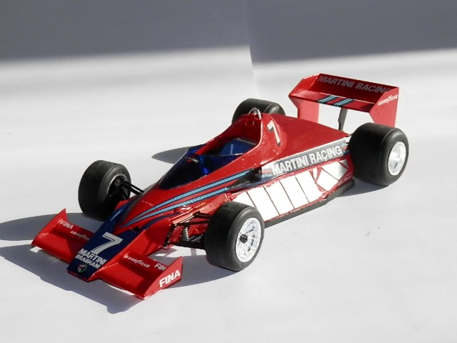
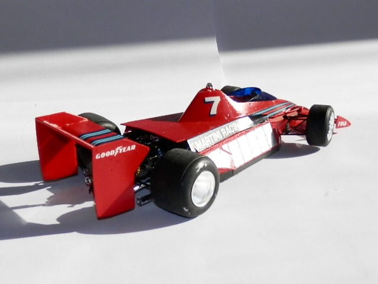
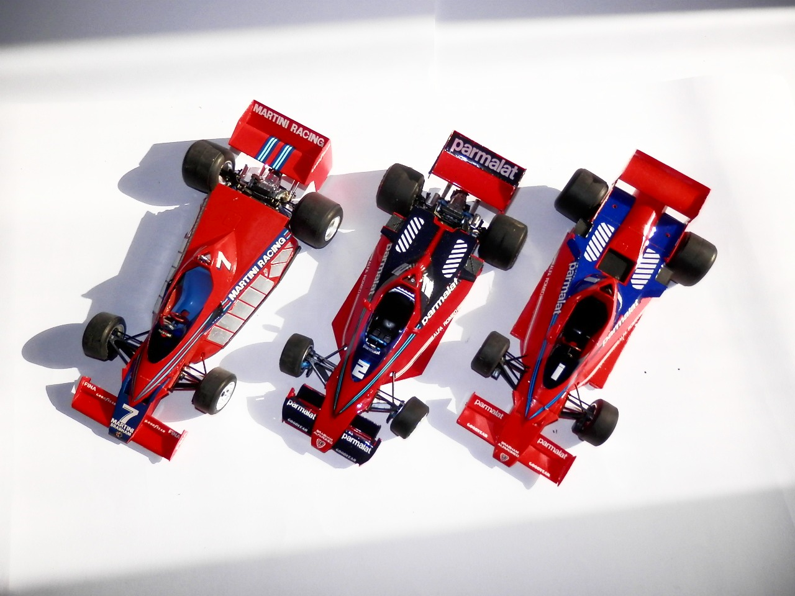
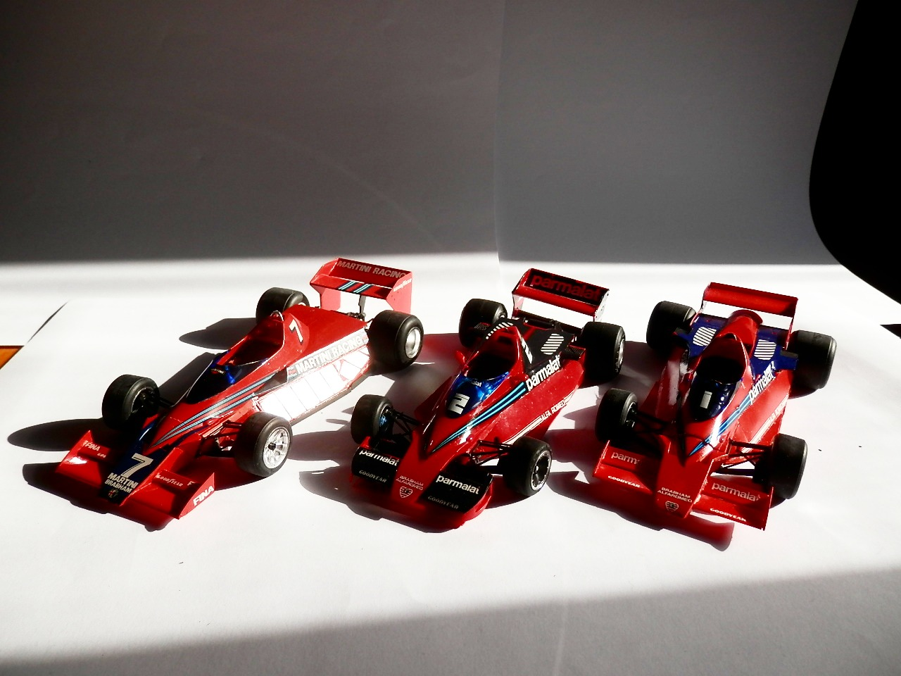
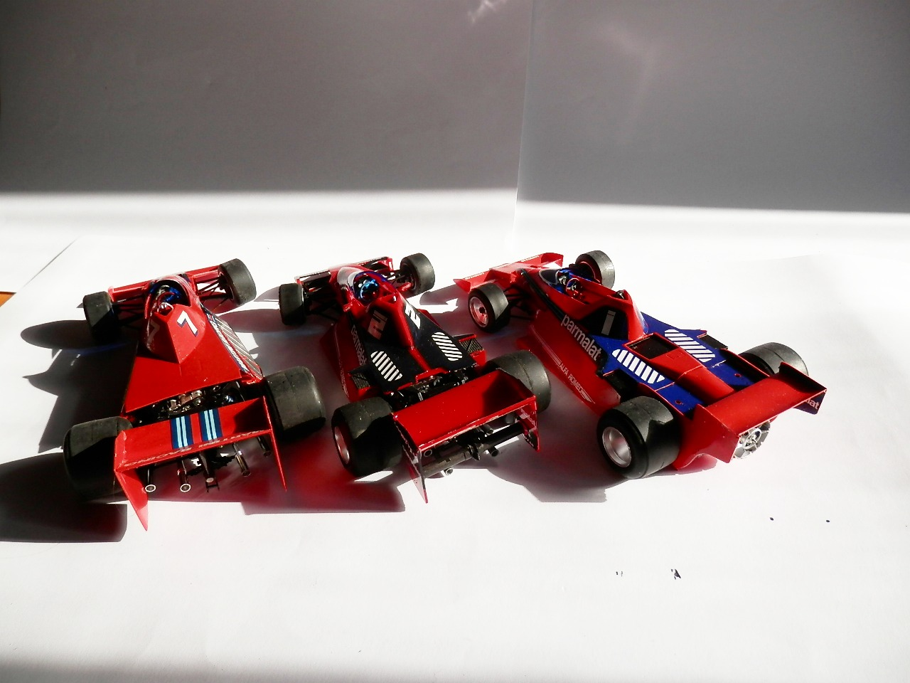
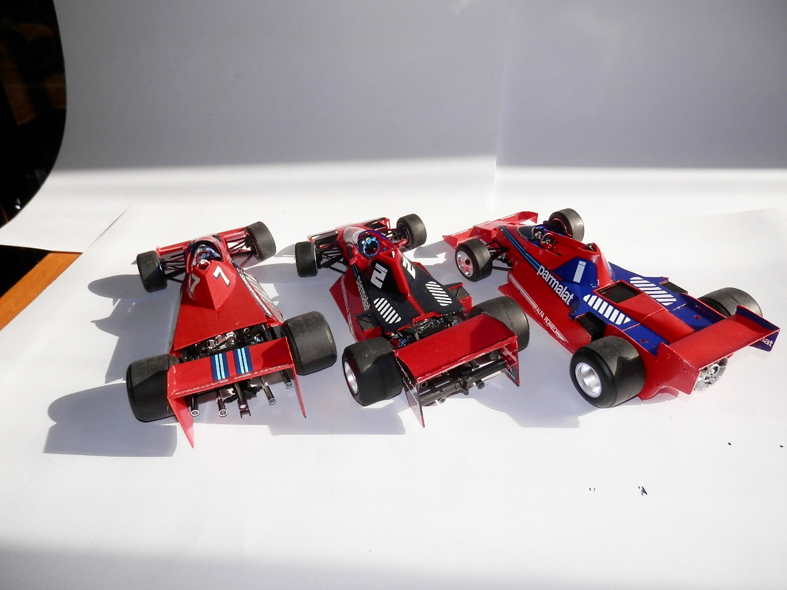

Auto e veicoli stradali · scale model archive
Brabham BT46 Launch event
Brabham BT46 Launch event — Kit: Hasegawa, Scale: 1/24. Nowadays all Formula one cars look the same except for the paint job, but there was a time when…

Photo gallery





English description
Nowadays all Formula one cars look the same except for the paint job, but there was a time when you could have three radically different versions of the SAME car. This is the presentation version, with surface cooling radiators which, in the end, did not work. As bonus content you can find all three versions merrily together
Descrizione italiana
Oggi tutte le vetture di Formula 1 sembrano uguali, a parte la verniciatura; ma ci fu un tempo in cui si potevano avere tre versioni radicalmente diverse della stessa macchina. La BT46B, con il ventilatore, fu una di quelle idee meravigliosamente folli.